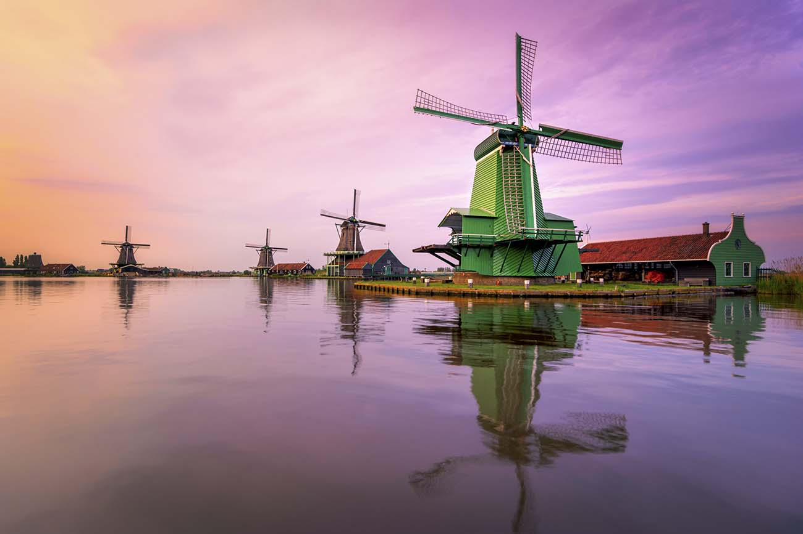

Wie op de Zaanse Schans om zich heen kijkt, ziet geschiedenis. Een gevoel van nostalgie, nee sterker, heimwee bekruipt u bij het zien van de houten gevels, de knijpraampjes en de lage deuren. Hier liggen eeuwenlange herinneringen als voetstappen van het verleden in elk vertrek beklonken. Honderden jaren geleden werd al binnen deze muren geslapen, gekookt, gelachen, gehuild, liefgehad, geruzied, geboren en gestorven. Nog steeds, de Zaanse Schans leeft, want alle panden worden bewoond. We nemen u graag mee in de verhalen van deze bijzondere plekken.
1. De diverse molens op de Zaanse Schans
Van een afstand ziet u de wieken al traag draaien met uitgestrekte weilanden op de achtergrond. Een sereen beeld, maar in de molen wordt hard gewerkt.
2. Maak al varend kennis met de Zaanstreek
Bekijk de Zaanse Schans eens vanaf een andere kant: vanaf het water! Dagelijks varen er verschillende boten via verschillende routes over de Zaan. Stap ook eens aan boord van de koeienboot. De kapitein vertelt u over de geschiedenis van de molens en de omgeving. Onderweg vaart u vlak langs de weilanden en komen de koeien dikwijls even gedag zeggen.
3. Overnachten op de Zaanse Schans
In de Zaanstreek duiken steeds meer locaties met Bed & Breakfast op. Dat maakt overnachten steeds leuker! De enige overnachtingsmogelijkheid op de Zaanse Schans zelf is B&B Heerlijck Slaapen. Ook is de hotelbranche sterk in opkomst. Met als absolute hoogtepunt het unieke Inntel Hotel in Zaandam, dat een opeenstapeling van Zaanse gevels is. Bekijk alle slaapmogelijkheden op www.zaanstreek.nl.
Voor meer informatie. Ga hier naar toe :Link naar de website
---
Hier is een foto (Klikbaar)

Kalverringdijk 23
1509 BT Zaandam, The Netherlands
T: (+31)75-614 8901
E info@indieswelvaren.com
Naar Zaanse-schans